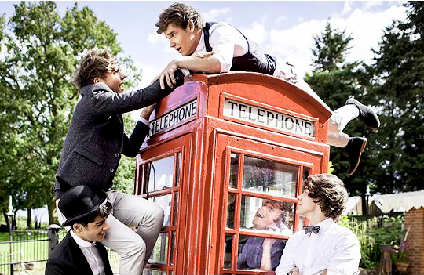

El primer sencillo de One Direction salió el 11 de Septiembre de 2011, llamado "What Makes You Beautiful" y empezó tanto su popularidad como premios Brit, MTV y Teen Choice Awards. Su segunda canción fue "Gotta Be You" ese mismo año y en Marzo de 2012 se lanzó oficialmente su álbum debut: "Up All Night", y salió otro sencillo del disco que es "One Thing".
EXPANDED EDITION
Live While We're Young
Kiss You
Little Things
C'mon C'mon
Last First Kiss
Heart Attack
Rock Me
Change My Mind
I Would
Over Again
Back For You
They Don't Know About Us
Summer Love
She's Not Afraid
Loved You First
Nobody Compares
Still The One
Truly Madly Deeply
Magic
Irresistible

Siguiendo en 2012, por fines de Septiembre se estrenó "Live While We're Young",primera canción el segundo disco. Continuando con sencillos como "Little Things" en Octubre y "Kiss You" en Noviembre, el álbum "Take Me Home" finalmente fue lanzado el 12 del mismo mes.
DELUXE EDITION
Best Song Ever
Story of My Life
Diana
Midnight Memories
You & I
Don't Forget Where You Belong
Strong
Happily
Right Now
Little Black Dress
Through the Dark
Something Great
Little White Lies
Better Than Words
Why Don't We Go There
Does He Know?
Alive
Half a Heart
Arrancando en Febrero de 2013, One Direction interpreta "One Way or Another (Teenage Kicks)" siendo un mashup de "One Way or Another" de Blondie y "Teenage Kicks" de The Undertones. La canción fue realizada con el objetivo de recaudar fondos para ayudar a la organización Comic Relief. Este tercer álbum comienza con un primer sencillo "Best Song Ever" en Julio, sigue en Octubre con "Story of My Life" y el 25 de Noviembre se estrena el disco completo de "Midnight Memories". En Marzo de 2014, se lanzó el videoclip con el mismo nombre del álbum y por mayo se estrenó "You & I".
DELUXE EDITION
Steal My Girl
Ready to Run
Where Do Broken Hearts Go
18
Girl Almighty
Fool's Gold
Night Changes
No Control
Fireproof
Spaces
Stockholm Syndrome
Clouds
Change Your Ticket
Illusion
Once in a Lifetime
Act My Age
Por abril del año 2014, se confirmó el cuarto álbum de One Direction. Ese mismo año, a finales de octubre, se estrenó el primer sencillo: "Steal My Girl". La segunda canción "Night Changes" salió el 14 de Noviembre y, tres días después, se lanzó el álbum llamado "Four" (Siendo el último disco donde está Zayn Malik como integrante).
DELUXE EDITION
Hey Angel
Drag Me Down
Perfect
Infinity
End of the Day
If I Could Fly
Long Way Down
Never Enough
Olivia
What a Feeling
Love You Goodbye
I Want to Write You a Song
History
Temporary Fix
Walking in the Wind
Wolves
A.M.
Finalizando en 2015, a fines de Julio se estrenó "Drag Me Down" donde en el videoclip se ve a la banda en el Centro Espacial Johnson de la NASA. Continuaron con su segundo sencillo del quinto álbum "Perfect" en Octubre y el 13 de Noviembre se lanzó su último disco "Made in the A.M". Y para cerrar esta etapa, se estrenó el videoclip de "History" en Enero de 2016 siendo el último sencillo de One Direction.